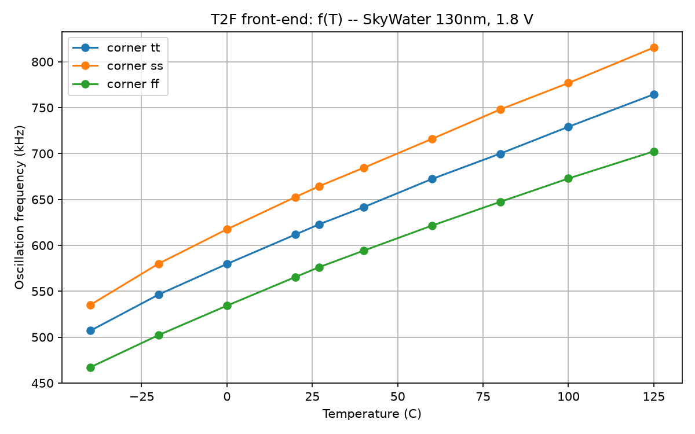
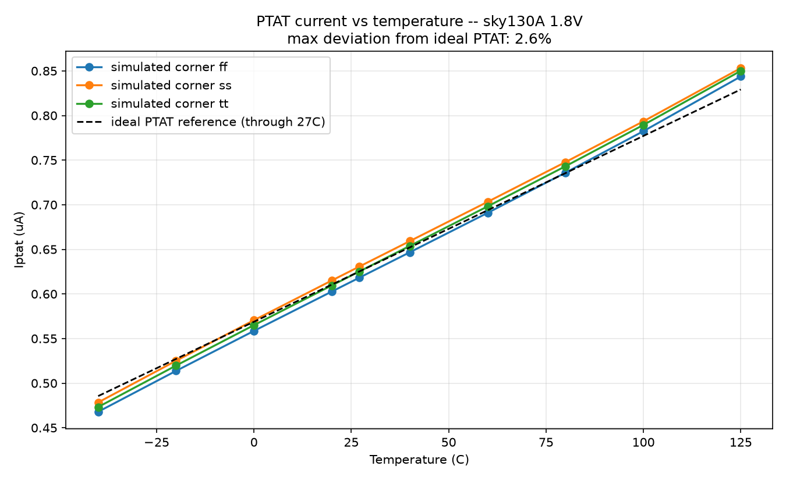
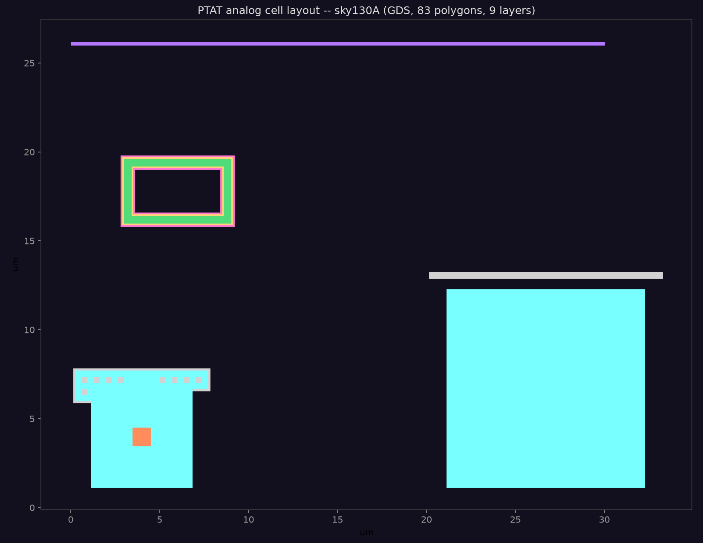

基于 IIC-OSIC-TOOLS 容器（服务器 192.168.100.102）与 SkyWater 130nm (sky130A) PDK
开发的一款智能温度传感器芯片：模拟前端（PTAT + 温度-频率转换）+ 数字核心（I2C 接口 + 校准），
完整走通 ngspice 模拟验证、Verilog 数字仿真、Yosys 综合与 magic 版图流程。
mult 参数——面积比必须用temp-sensor-chip/
├── analog/
│ ├── spice/ # PTAT(T2F) 网表: ptat/csro/t2f + 测试平台
│ └── sim/ # ngspice 结果: results_{tt,ss,ff}.csv, freq_vs_temp.png
├── rtl/
│ ├── i2c_slave.v # I2C 从机（地址 0x48, 400kHz）
│ ├── temp_engine.v # T2F 门控计数 + 两点校准 → 9-bit 温度
│ ├── temp_regs.v # 寄存器文件（配置/Thyst/TOS/温度）
│ └── temp_sensor_top.v # 芯片顶层（含 os_int 过温告警）
├── tb/
│ ├── i2c_master_model.v # I2C 主设备位级模型
│ ├── t2f_model.v # 模拟前端行为模型（f(T) 来自 ngspice 数据）
│ ├── tb_i2c.v # I2C 协议测试（6 项 PASS）
│ ├── tb_top.v # 全芯片测试（温度读回精度）
│ └── t2f_model_params.vh # 自动生成的校准参数
├── scripts/
│ ├── run_analog.py # ngspice 温度/角点扫描驱动 + 拟合
│ ├── gen_t2f_model.py # 生成校准常数 + t2f 行为模型参数
│ └── run_in_container.sh # IIC-OSIC-TOOLS 容器运行器
├── syn/ # Yosys 综合（run_synth.sh, out/）
├── layout/ # magic 版图（ptat_cell.mag/.gds, DRC 报告）
├── docs/architecture.md # 架构设计文档
└── Makefile # sim-analog / sim-rtl / model / synth
# 模拟前端全角点扫描（ngspice，容器内）
./scripts/run_in_container.sh "make sim-analog"
# 生成校准模型参数（由 analog/sim/results_tt.csv 驱动）
./scripts/run_in_container.sh "make model"
# 数字 RTL 仿真（iverilog）
make sim-rtl # 本机（OSS CAD Suite）或容器内均可
# 综合（yosys → sky130_fd_sc_hd）
./scripts/run_in_container.sh "make synth"
# magic 版图 + DRC + GDS
./scripts/run_in_container.sh "cd layout && magic -noconsole -dnull \
-rcfile /foss/pdks/sky130A/libs.tech/magic/sky130A.tcl ptat_cell.tcl"
| 温度 | tt 频率 | ss 频率 | ff 频率 | Iptat(tt) |
|---|---|---|---|---|
| -40 ℃ | 507 kHz | 535 kHz | 467 kHz | 0.473 µA |
| -20 ℃ | 546 kHz | 580 kHz | 502 kHz | 0.520 µA |
| 0 ℃ | 580 kHz | 617 kHz | 534 kHz | 0.565 µA |
| 20 ℃ | 612 kHz | 653 kHz | 565 kHz | 0.610 µA |
| 27 ℃ | 623 kHz | 664 kHz | 576 kHz | 0.625 µA |
| 40 ℃ | 642 kHz | 684 kHz | 594 kHz | 0.654 µA |
| 60 ℃ | 672 kHz | 716 kHz | 621 kHz | 0.698 µA |
| 80 ℃ | 700 kHz | 748 kHz | 647 kHz | 0.743 µA |
| 100 ℃ | 729 kHz | 777 kHz | 673 kHz | 0.789 µA |
| 125 ℃ | 765 kHz | 815 kHz | 702 kHz | 0.850 µA |
测试配图：


完整数据见 analog/sim/results_*.csv 与 analog/sim/ptat_results.csv。
tb_i2c：写配置/读回、Thyst/TOS 读写、错误地址 NACK、温度寄存器——6/6 PASStb_top：T=25/-40/125/0 ℃ 全芯片温度读回（使用 ngspice 校准参数）temp_sensor_top 合计 705 单元 / ~6550 µm²layout/ptat_cell.mag：双 PNP（PDK 器件几何）+ p+ poly 电阻 + 金属布线ptat_cell.gds 已导出
I = VT·ln(N)/R1，N≈10（W3p40/W0p68 面积比），R1=100kΩ。temp = ((raw-C0)·GAIN)>>8 + T0，C0/C1 为 -40/125 ℃ 标定计数。